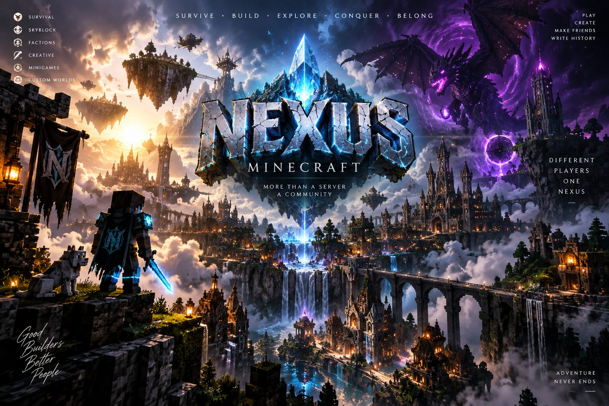

__BLURB__
__MODES_LEDE__
Voting is how people find a small server — the lists rank by it, and one click puts us higher for everyone. It costs you nothing and you get paid in game for it.
__VOTE_REWARD__
Java Edition, version __VERSION__. Then Multiplayer → Add Server.
Put __ADDRESS__ in the address box. The name can be anything you like.
We use our own textures. Accepting them is what makes the place look like ours.